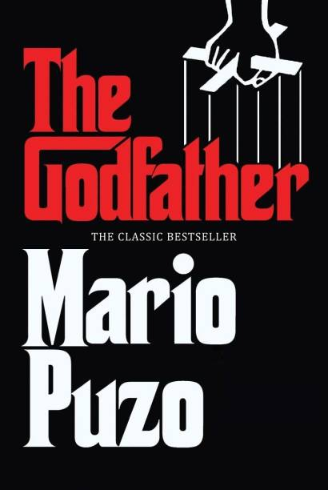

The Godfather - is a crime novel by American author Mario Puzo. Originally published in 1969 by G. P. Putnam's Sons, the novel details the story of a fictional Mafia family in New York City (and Long Island), headed by Vito Corleone, the Godfather. The novel covers the years 1945 to 1955 and includes the back story of Vito Corleone from early childhood to adulthood.
The Corleone family, one of the Five Families of the New York Mafia, fights the other four families in a brutal war in the years after World War II. After Don Vito Corleone is shot by men working for drug kingpin Virgil "The Turk" Sollozzo, Corleone's two sons, Santino (Sonny) and Michael, must run the family business with the help of consigliere Tom Hagen and the family's two trusted caporegimes, Peter Clemenza and Salvatore Tessio. When Michael murders Sollozzo and his bodyguard, corrupt NYPD Captain Mark McCluskey, while meeting with them in a restaurant, the conflict escalates into a full-scale war which results in Sonny's murder. Michael must return from hiding in Sicily to assume control of the family as the new Don. Under his retired father's tutelage, Michael orchestrates a plan to extract revenge, while relocating the Corleone family's power base to Las Vegas in order to further his goal of legitimizing the family and getting them out of organized crime. This encompasses the murder of all of the Corleone family's enemies, including Michael's brother-in-law Carlo Rizzi, who played a part in Sonny's murder. After selling all of the family's remaining businesses in New York, the Corleones permanently move to Las Vegas.